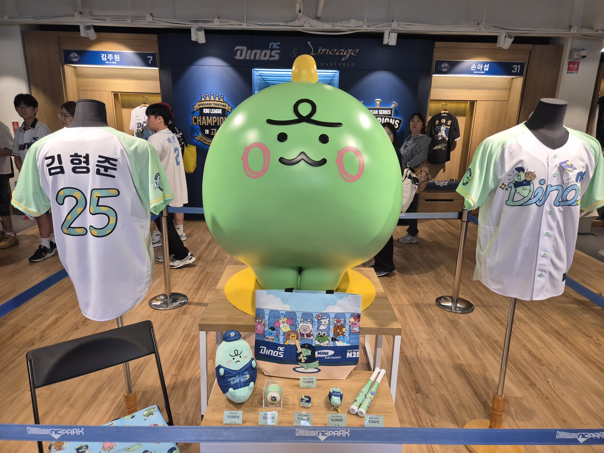
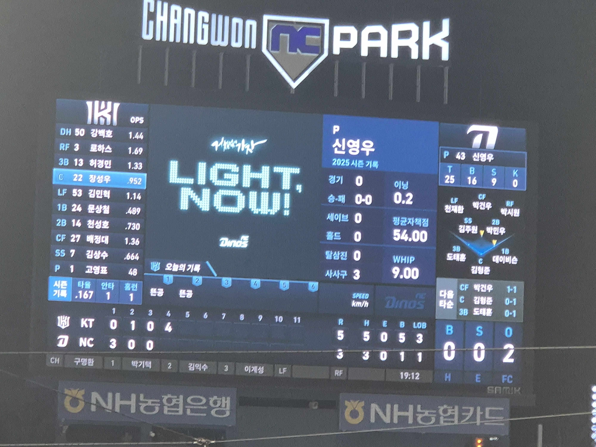
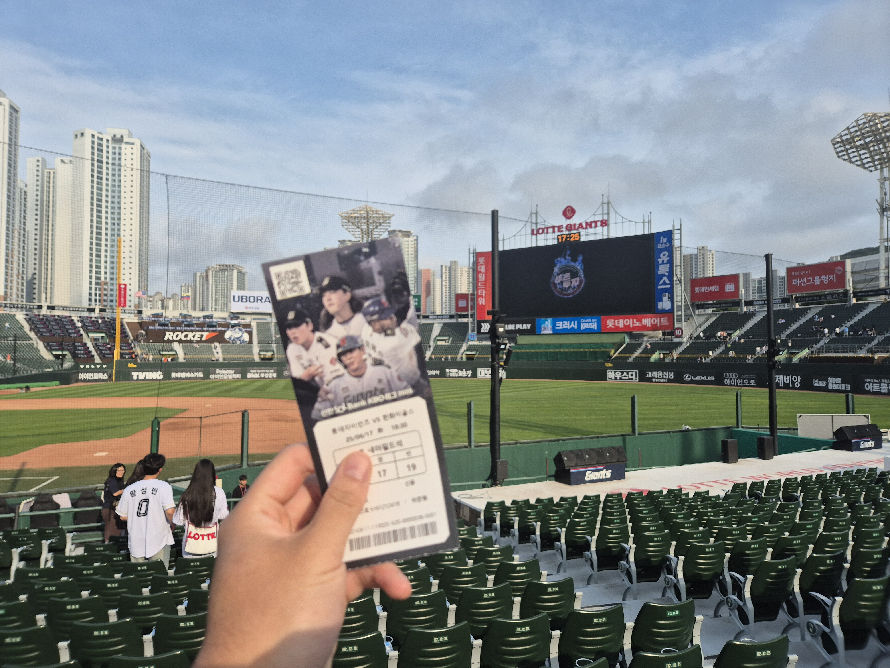
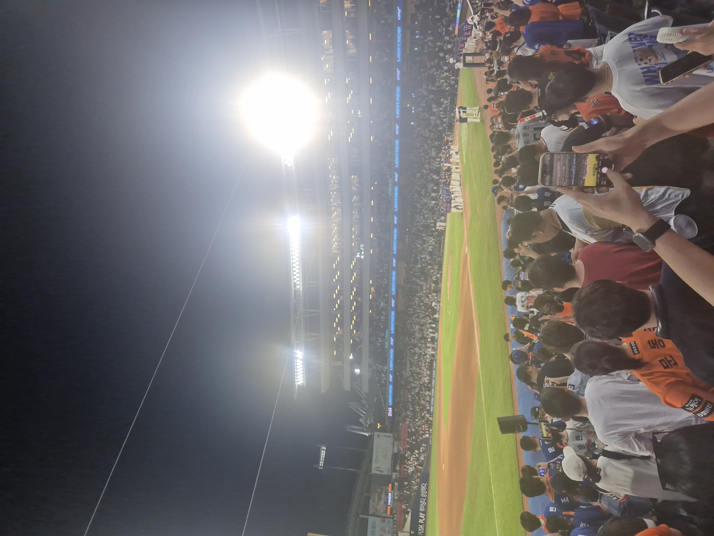
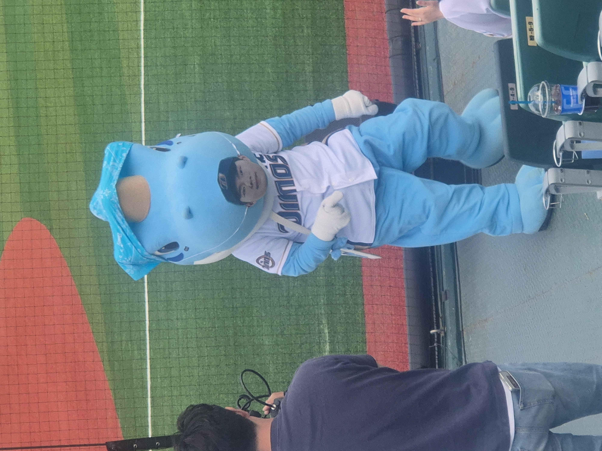
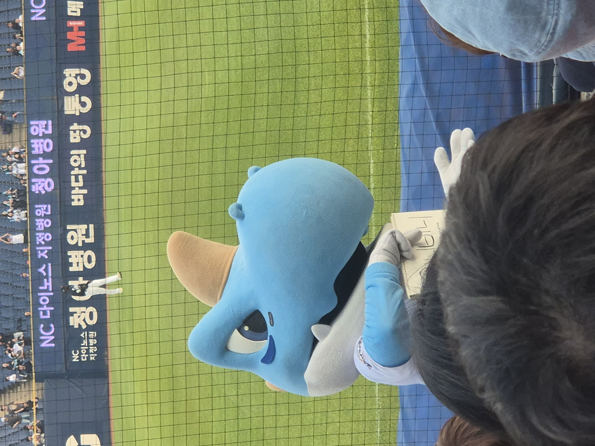
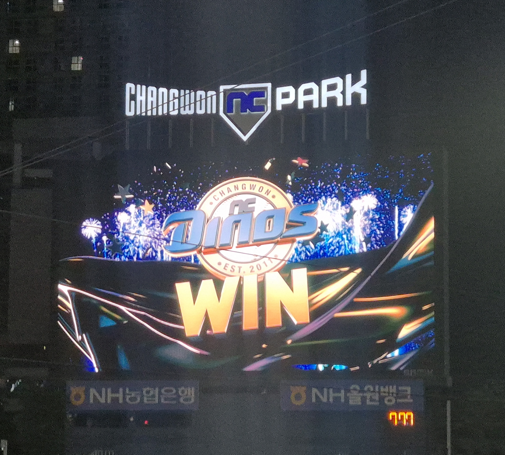
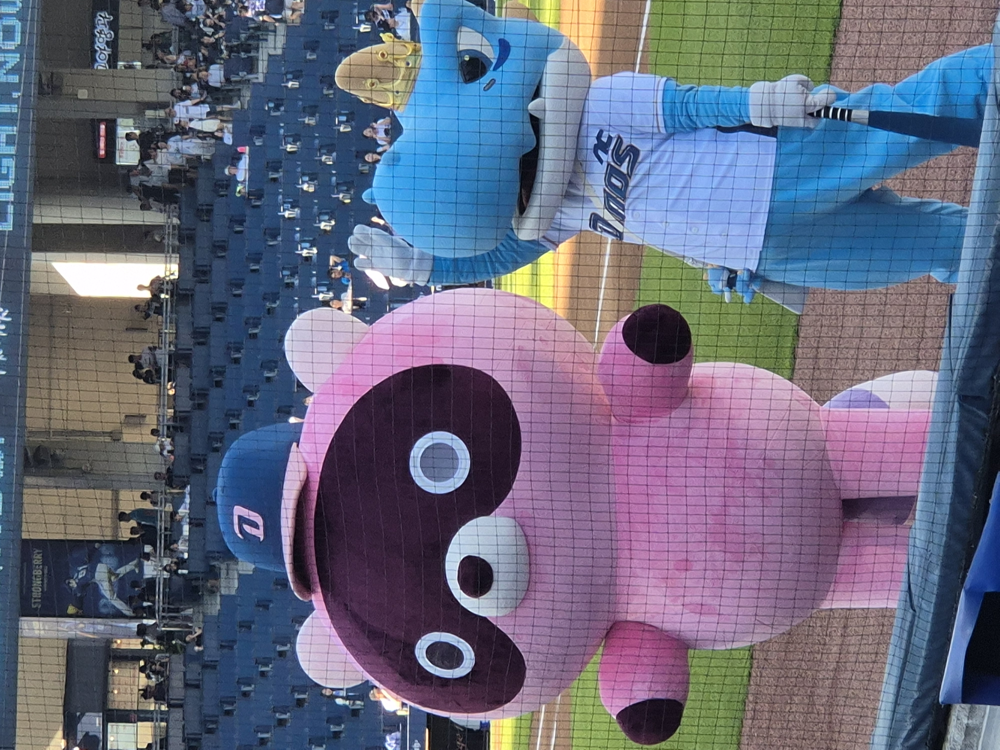

인터스텔라 (Interstellar)
시간과 사랑, 그리고 인간의 선택에 대한 깊은 메시지를 담은 영화입니다. 과학적 상상력과 감정적인 서사가 어우러져 많은 여운을 남겼습니다.

아직 배울게 많은 개발자 녀녕입니다!.
안녕하세요! 자바 생태계에서 활동하며, 견고하고 응집도 높은 시스템을 만드는 데 관심이 많은 녀녕입니다.
최근에는 블랙잭 게임과 같은 미션을 통해 디자인 패턴(State 패턴 등)을 적용해보고, 복잡한 머지 충돌을 해결하며 Git 브랜치 관리 전략을 고민하고 있습니다. 개발뿐만 아니라 동료들과 함께 3D 수박 게임을 만들거나, 연극 대본을 쓰며 다방면으로 즐겁게 성장하고 있습니다!
| 이름 | 녀녕 |
|---|---|
| 생일 | 12월 6일 |
| MBTI | ISFJ |
| 취미 | 보드게임, 러닝 |
야구 직관 일기









시간과 사랑, 그리고 인간의 선택에 대한 깊은 메시지를 담은 영화입니다. 과학적 상상력과 감정적인 서사가 어우러져 많은 여운을 남겼습니다.
꿈과 현실의 경계를 넘나드는 독창적인 스토리로 사고를 확장시켜준 작품입니다. 여러 번 볼수록 새로운 해석이 가능한 점이 인상 깊었습니다.
오늘 새롭게 배운 것들을 기록합니다.
HTML 문서의 기본 구조와 시맨틱 태그(section, article 등)의 역할을 배웠다. 구조를 잘 나누면 유지보수가 쉬워진다는 것을 이해했다.
Flexbox를 사용하여 요소를 정렬하는 방법을 학습했다. justify-content와 align-items의 차이를 이해했다.